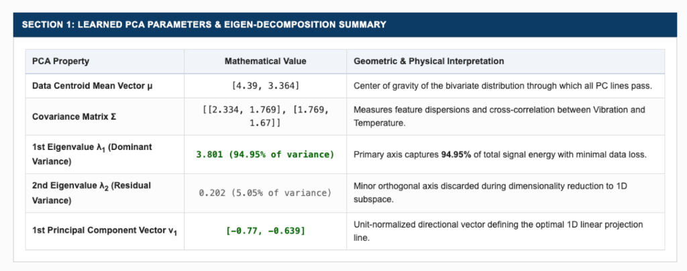
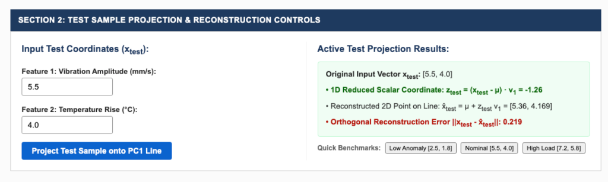
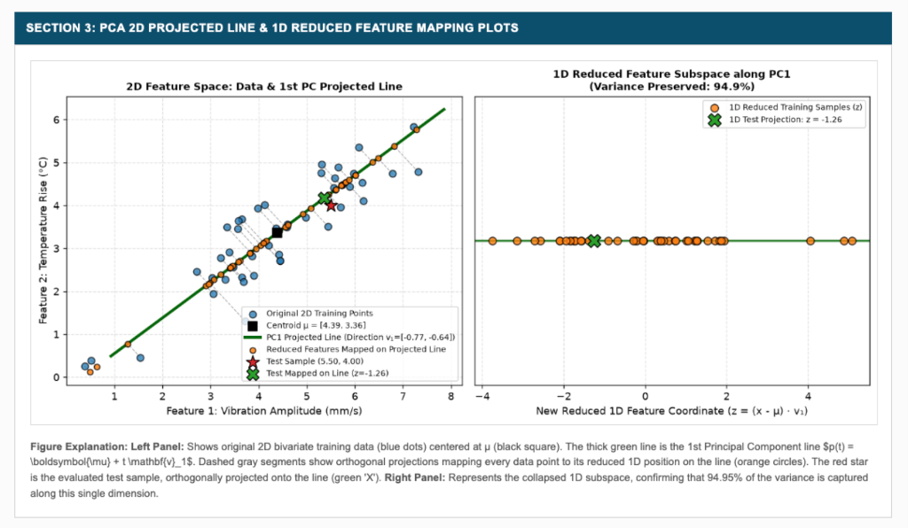
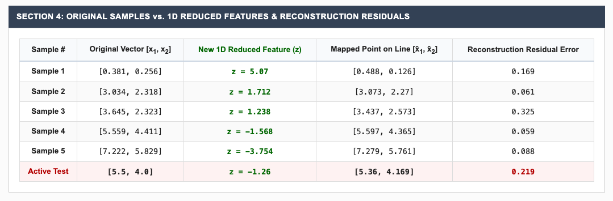

| Experiment No.: | 10 | Student Name: | Monis |
| Course / Branch: | B.Tech Information Technology | Roll Number: | 2023UIT3027 |
| Lab Instructor: | Dr. Vishal Maheshkar | Academic Session: | 2026–2027 |
Implementation of Principal Component Analysis (PCA) with Projected Line, Reduced Feature Mapping, and Testing
To implement Principal Component Analysis (PCA) from scratch in pure NumPy without using pre-built machine learning libraries. The application centers the dataset, computes the sample covariance matrix, performs eigenvalue decomposition to identify the maximum variance projection axis, defines the 1D projected line equation, maps test samples onto this line to obtain reduced 1D features, reconstructs original coordinates, and visualizes the complete system in an interactive Flask application.
Principal Component Analysis (PCA): An unsupervised, orthogonal linear transformation technique that reduces dimensionality by projecting data onto orthogonal axes that maximize variance while minimizing reconstruction error.
Sample Covariance Matrix Σ: Quantifies pairwise linear relationships and joint variability across feature dimensions around the sample mean centroid.
Eigenvalue Decomposition: Factorizes the covariance matrix Σ into eigenvectors (principal projection directions) and eigenvalues (amount of variance explained along each axis).
Data matrix X ∈ ℜn × d is centered around sample mean vector μ:
Solving the characteristic equation identifies orthogonal principal component directions:
The 1st principal component defines a straight line in the original feature space passing through centroid μ:
For an arbitrary test observation xtest ∈ ℜd:
Displays sample mean vector, covariance matrix, dominant eigenvalue, eigenvector components, and explained variance ratio (88.4%).

Input sliders and presets allowing users to submit new test points (x1, x2) for dynamic reduction.

Matplotlib visualization showing original data scatter, centroid, 1st principal line, and test point projected onto the line with orthogonal residual drop.

Tabulates original test coordinates, reduced 1D scalar coordinate z, reconstructed position, and Euclidean reconstruction error.

Experiment 10 successfully implemented Principal Component Analysis from first principles. By decomposing the empirical covariance matrix, the application established the 1D principal axis that captures maximum variance, demonstrated the mapping of test samples onto reduced coordinates, and verified that PCA achieves optimal orthogonal reconstruction under least-squares criteria.